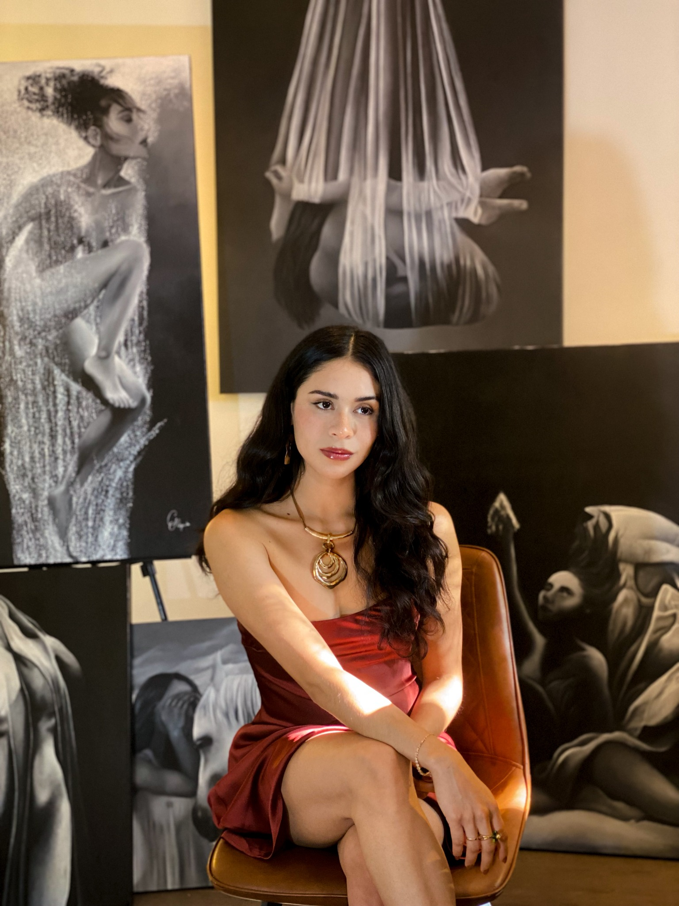

The vision behind the works
Carolina Delgado.

Mexico → Montreal
Painting as an
inner language.
A Mexican visual artist based in Montreal, Carolina Delgado explores transformation, vulnerability, identity and emotional resilience.
With a background in business and a self-taught artistic practice, she turns to painting to understand change and give form to emotions that are difficult to express. She works primarily with acrylic and oil on canvas.
Her practice is rooted in a belief: transformation is a continuous process of acceptance, healing and growth.
Artistic practice
Shadow reveals.
Light opens.
A palette of black and white creates contrast and depth. Light evokes peace, purity and openness; shadows express inner tensions and the search for harmony. Together, they lend the works an almost dreamlike presence.
Symbolic figures become a bridge between the visible and the unseen, a space for reflection where viewers can connect with their own experience.
Read the original artist statements
I am a Mexican visual artist based in Montreal, Canada. My work explores themes of transformation, vulnerability, identity, and emotional resilience. Through symbolic figures and a restrained color palette, I seek to create spaces where emotion and introspection can exist without words. Although I studied business, I am a self-taught artist. Painting became my way of understanding change and giving form to emotions that are often difficult to express. Each piece is an exploration of the human experience, where symbolism becomes a bridge between the visible and the unseen. I work primarily with acrylic and oil on canvas, creating paintings that invite viewers to pause, reflect, and connect with their own inner journey. My practice is rooted in the belief that transformation is not a single moment, but a continuous process of acceptance, healing, and growth.
While I've explored various artistic mediums, I gravitate toward using a limited black-and-white palette, which allows me to create striking contrasts and a sense of visual depth through the interplay of shadows and light. This monochromatic approach gives my work an ethereal, almost dreamlike quality.
The intentional use of shadows in my paintings adds a layer of depth and conveys complex emotions. The light represents peace, purity, and sometimes openness, while the darker shades reflect an internal struggle and harmony. Together, these elements express profound emotional strength and sensitivity, exploring themes of identity, freedom, and self-acceptance.
Through this visual narrative, I invite reflection and emotional connection, enhancing the raw, honest beauty within each piece.